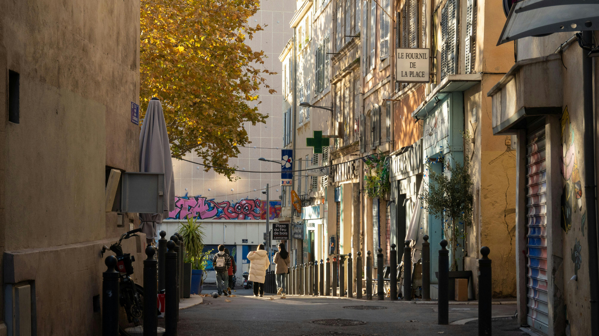

On ne vend pas du marketing.
On vous rend visibles.
Trois convictions qui guident tout ce qu'on fait.
Enracinés ici.
Marseille n'est pas un terrain de jeu. C'est notre maison.
On tourne dans vos rues, on mange dans vos restos, on connaît vos voisins. Quand on crée du contenu pour vous, il ressemble à Marseille — pas à un template générique shooté en studio. Cet ancrage local, ça ne s'achète pas. Ça se construit avec le temps, l'envie, et une vraie connaissance du terrain.

Toujours disponibles.
On s'adapte à votre vie, pas l'inverse.
Un changement de dernière minute ? On gère. Une question un dimanche soir ? On répond. On s'adapte à votre rythme parce qu'on sait que votre commerce, c'est toute votre vie. Travailler proche, c'est anticiper vos besoins avant même que vous les formuliez.
Un partenaire, pas un prestataire.
Vous avez quelqu'un. Une seule personne. Toujours la même.
Pas un ticket de support, pas un account manager qui change tous les 6 mois. Une personne qui connaît votre dossier du premier au dernier jour, qui comprend vos contraintes, et qui s'investit comme si c'était son propre projet. C'est ça, travailler autrement.